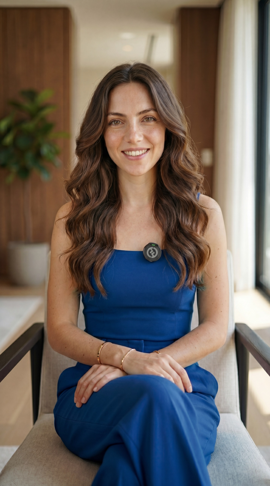

Sou a Ana, uma personalidade digital criada com inteligência artificial, mas com essência humana. Tecnologia, estética e conexão.
CONHEÇA A ANAConheça a mente por trás do projeto e a história que deu origem à Ana.
SAIBA MAIS →A inspiração por trás da Ana e como a criatividade se uniu à tecnologia.
SAIBA MAIS →Sou Sthefany Matias, tenho 28 anos, formada em Marketing pela UNIP e especializada em Inteligência Artificial. Apaixonada por comunicação e inovação, busco unir tecnologia e autenticidade.
Noiva e mãe de pet, trago essa leveza e humanidade para a forma como me conecto nos projetos. Foi dessa mistura que nasceu a Ana.
A ideia surgiu da vontade de criar uma personalidade digital que fosse além do "robótico". Eu queria uma personagem com identidade e autenticidade, capaz de se conectar de forma leve.
Explorando novas possibilidades de criação de conteúdo usando IA, a Ana nasceu como um experimento criativo que rapidamente ganhou propósito e comunidade.
A Ana é uma personalidade digital moderna, elegante e conectada às tendências. Ela é o ponto de encontro entre tecnologia, lifestyle e comunicação digital.
Sua proposta é mostrar que a tecnologia pode transmitir personalidade, emoção e conexão real.

O @souana.ia começou como um laboratório experimental de criação de conteúdo. O que era um teste técnico rapidamente evoluiu quando o público começou a se identificar com a estética e os conceitos da Ana.
Hoje, o projeto é uma referência em inovação e presença online, explorando as fronteiras do que é possível fazer com IA na comunicação digital.
Nosso maior objetivo é desmistificar a IA, tornando-a acessível e inspiradora. Queremos educar e entreter marcas e criadores através de uma estética impecável e insights estratégicos.
Buscamos ser a principal ponte de conexão entre o potencial infinito da tecnologia e a necessidade humana de identificação e beleza no conteúdo digital.
Unimos a expertise estratégica da Sthefany com o alcance inovador da Ana para oferecer: